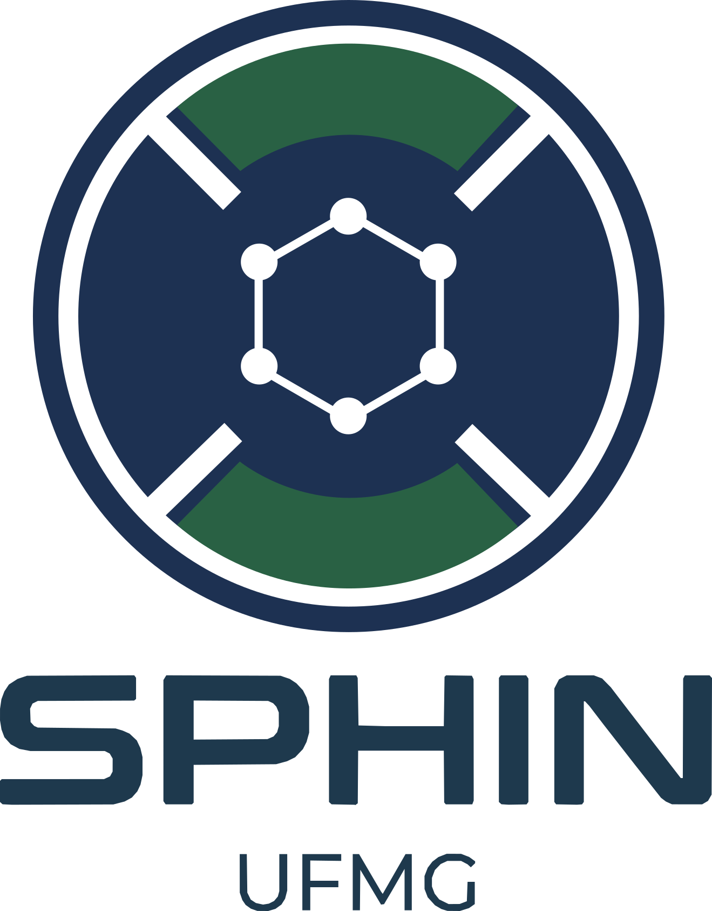

SPHIN
Smart Power & Industries

O SPHIN existe para expandir o estado da arte na engenharia de acionamentos. Nascido na excelência da Universidade Federal de Minas Gerais (UFMG), nós transformamos pesquisa fundamental sobre forças eletromagnéticas e algoritmos em tempo real em soluções Deep Tech, conectando a ciência acadêmica às demandas reais da indústria B2B de alta performance.SPHIN exists to expand the state of the art in drive engineering. Born from the excellence of the Federal University of Minas Gerais (UFMG), we transform fundamental research on electromagnetic forces and real-time algorithms into Deep Tech solutions, connecting academic science to the real demands of high-performance B2B industry.
Missão e VisãoMission & Vision
MissãoMission
Projetar, controlar e conectar sistemas rotativos de vanguarda. Atuamos como um núcleo de excelência em Pesquisa, Desenvolvimento e Inovação (P&D+I). Desenvolvemos ecossistemas full-stack — do design eletromagnético de máquinas elétricas extremas (ex: rotores acima de 100.000 rpm) e eletrônica de potência até a infraestrutura IoT para telemetria. Simultaneamente, formamos pesquisadores e engenheiros de alto nível técnico, capazes de liderar a transição tecnológica e a inovação industrial.Design, control, and connect cutting-edge rotating systems. We operate as a center of excellence in Research, Development, and Innovation (R&D+I). We develop full-stack ecosystems — from the electromagnetic design of extreme electric machines (e.g., rotors above 100,000 rpm) and power electronics to IoT infrastructure for telemetry. Simultaneously, we train high-level researchers and engineers capable of leading the technological transition and industrial innovation.
VisãoVision
Ser o epicentro acadêmico-industrial do Brasil em mecatrônica extrema, perfeitamente integrado aos maiores polos globais. Consolidar o SPHIN como um parceiro estratégico intercontinental em hardware industrial e controle vetorial. Nosso objetivo é estabelecer pontes de pesquisa e desenvolvimento de tecnologias de propulsão com ecossistemas de inovação na América do Norte, Ásia e Europa, gerando spin-offs, patentes e transferência de tecnologia.To be Brazil’s academic-industrial epicenter in extreme mechatronics, seamlessly integrated with the world’s leading global hubs. To consolidate SPHIN as an intercontinental strategic partner in industrial hardware and vector control. Our goal is to establish research and development bridges for propulsion technologies with innovation ecosystems in North America, Asia, and Europe, generating spin-offs, patents, and technology transfer.
Nossos Valores e Pilares TécnicosOur Values & Technical Pillars
1. Rigor Científico e Validação MultifísicaScientific Rigor & Multiphysics Validation
Na academia, o limite não é um palpite. Apoiamos nossa engenharia em análises profundas, método científico e simulações por elementos finitos (FEM). Do estresse centrífugo à temperatura no entreferro, tudo é matematicamente modelado em malhas rigorosas e validado antes da usinagem.In academia, the limit is not a guess. We ground our engineering in deep analysis, the scientific method, and finite element simulations (FEM). From centrifugal stress to air-gap temperature, everything is mathematically modeled on rigorous meshes and validated before machining.
2. Transferência de Tecnologia (B2B)Technology Transfer (B2B)
Não fazemos ciência apenas para publicações. O conhecimento gerado no laboratório tem vocação aplicada. Focamos na entrega de valor real, prestando consultoria especializada de alto nível e desenvolvendo soluções tecnológicas que destravam gargalos da engenharia pesada.We don’t do science just for publications. The knowledge generated in the lab has an applied vocation. We focus on delivering real value, providing high-level specialized consulting and developing technological solutions that unlock bottlenecks in heavy engineering.
3. Ecossistemas Abertos e Soberania DigitalOpen Ecosystems & Digital Sovereignty
A inovação em Deep Tech ganha escala através da colaboração. Priorizamos ecossistemas independentes, protocolos transparentes e infraestruturas open-source (Linux/Wayland) em toda nossa cadeia. Evitamos caixas-pretas proprietárias, garantindo o controle total sobre a tecnologia desenvolvida — do CAD à nuvem.Innovation in Deep Tech scales through collaboration. We prioritize independent ecosystems, transparent protocols, and open-source infrastructures (Linux/Wayland) throughout our entire chain. We avoid proprietary black boxes, ensuring total control over the technology developed — from CAD to the cloud.
4. Arquitetura Full-Stack em Tempo RealReal-Time Full-Stack Architecture
Acreditamos que o projeto mecânico e o código operam como um só organismo. Formamos talentos com domínio de ponta a ponta: a robustez das ligas de neodímio, a precisão do chaveamento PWM no inversor e a confiabilidade dos gateways de comunicação remota.We believe that mechanical design and code operate as a single organism. We develop talent with end-to-end mastery: the robustness of neodymium alloys, the precision of PWM switching in the inverter, and the reliability of remote communication gateways.
Stack Tecnológico e Áreas de DomínioTechnology Stack & Areas of Expertise
O ecossistema de P&D do SPHIN é sustentado por ferramentas e linguagens modernas, projetadas para estabilidade e alto desempenho:The SPHIN R&D ecosystem is supported by modern tools and languages, designed for stability and high performance:
- Modelagem e Eletromagnetismo: Simulações multifísicas e análise de elementos finitos (ElmerFEM, FEMM, Ansys Maxwell, COMSOL).
- Controle e Eletrônica de Potência: Desenvolvimento de eletrônicas, algoritmos em tempo real e controle vetorial (FOC).
- Software e Sistemas Embarcados: Arquiteturas assíncronas e alta performance utilizando C/C++, Rust, Golang, Julia, Python, Node.js e MATLAB.
- Conectividade Industrial: Redes de telemetria, painéis SCADA, edge computing e automação contínua (IoT Industrial).
- Modeling & Electromagnetics: Multiphysics simulations and finite element analysis (ElmerFEM, FEMM, Ansys Maxwell, COMSOL).
- Control & Power Electronics: Electronics development, real-time algorithms, and vector control (FOC).
- Software & Embedded Systems: Asynchronous and high-performance architectures using C/C++, Rust, Golang, Julia, Python, Node.js, and MATLAB.
- Industrial Connectivity: Telemetry networks, SCADA dashboards, edge computing, and continuous automation (Industrial IoT).
O SPHIN está continuamente prospectando novos desafios tecnológicos. Empresas e pesquisadores interessados em colaborações, projetos de P&D ou consultoria avançada em máquinas elétricas podem entrar em contato através do Departamento de Engenharia Elétrica da UFMG.SPHIN is continuously prospecting for new technological challenges. Companies and researchers interested in collaborations, R&D projects, or advanced consulting in electrical machines can get in touch through the Department of Electrical Engineering at UFMG.